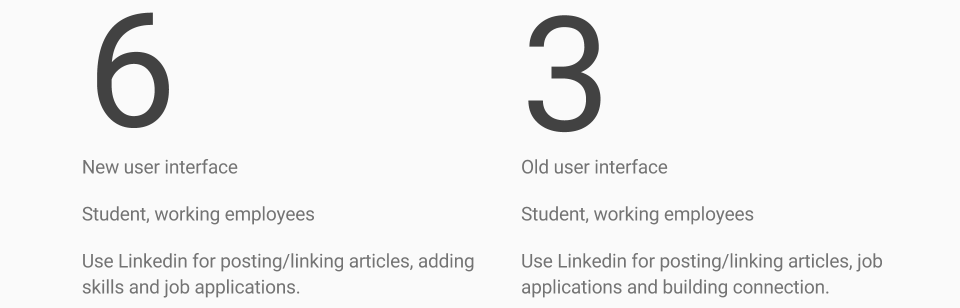
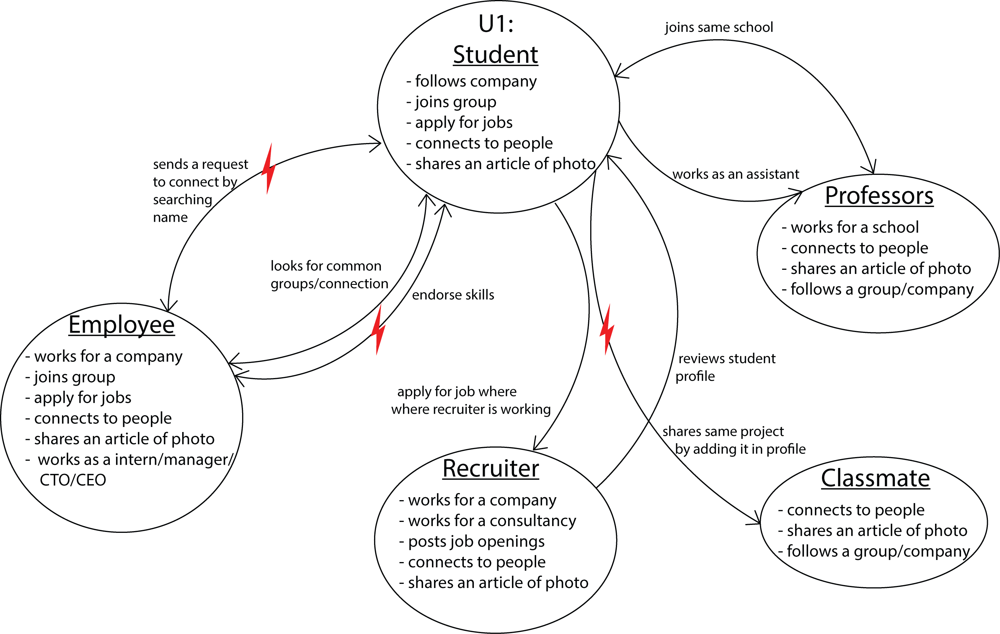
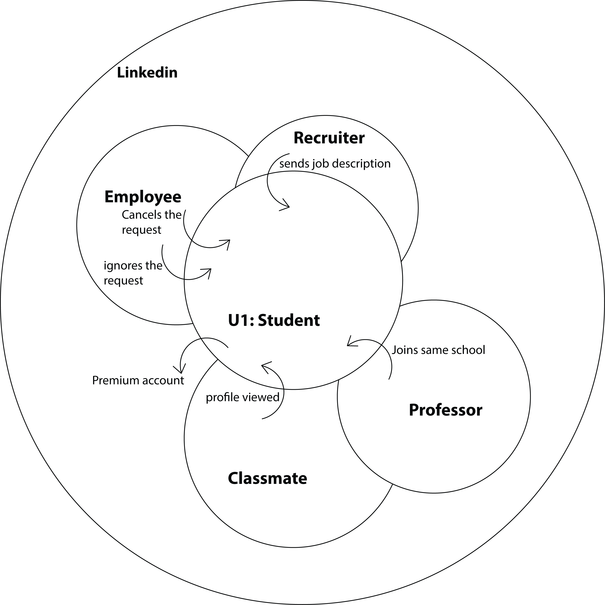
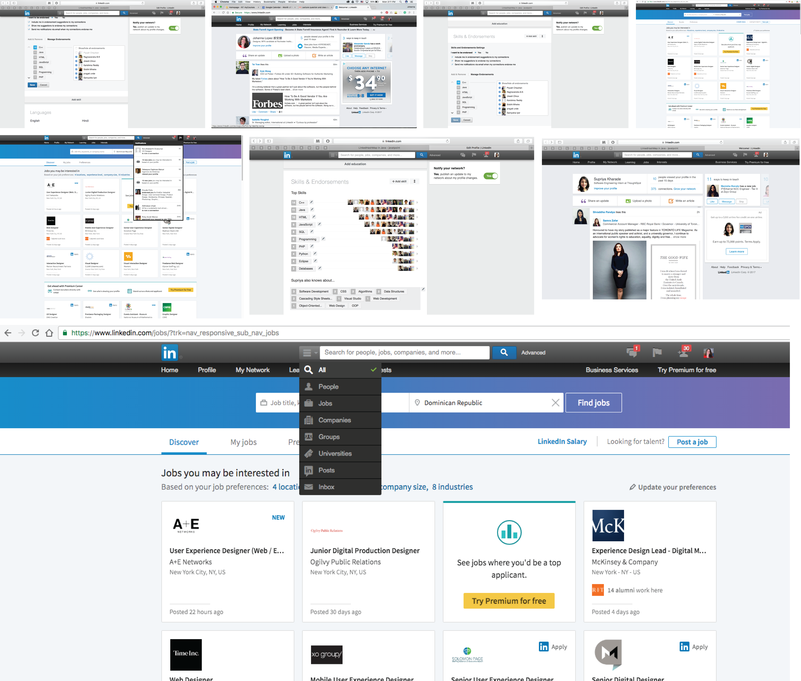
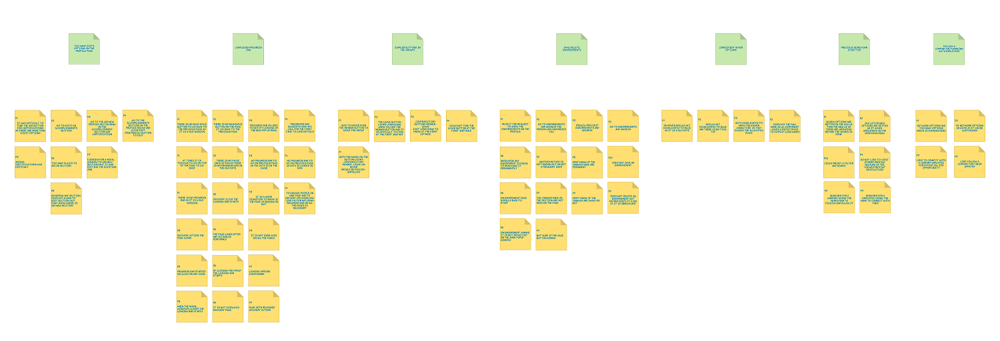
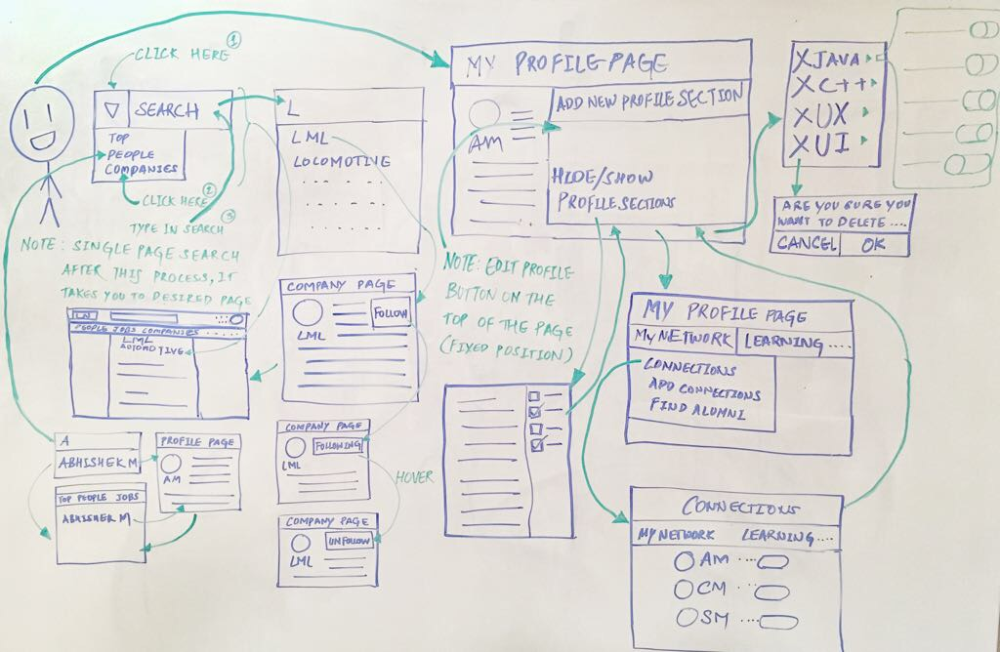

Linkedin User Experience: Old vs New
Seize The Opportunity
You all may have experienced the new User Interface which LinkedIn has rolled out few days back. We have also observed that the new UI is not out for all the users there are few who still have the previous UI. So we wanted to grab this opportunity, this short transition time to collect user data and come up with new design which has good parts of both the versions. And not only that but also come up with something which both the UIs are missing. The basic idea behind this study is to evaluate the updated design on users and provide design suggestions for the platform. The task scenarios given to the users are based off of the most common tasks users (in this case students) perform on LinkedIn. The study hopes to provide required set of design changes that can further make the website more usable.
Demographic

Interpretation of Data
Following are the notes taken from the user interviews
- Uses Old UI
- Irritated with new popups
- Auto scroll of page after closing popup window
- Thinks hiding endorsement = removing endorsement
- Sees new UI for the first time
- Wished to have photos of people who endorsed her
- Endorsement section from old UI was better
- Less options are visible
- Search is confusing
- Does not understand the meaning of follow button
- Not sure how to unfollow company
- Cannot differentiate between headings and buttons
- Difficulty in adding new section
Flow Model
depicts people’s responsibilities and the communication and coordination required to do a job.

Cultural Model
reveals influences on a person weather external to the company or internal company policies.

Artifact Models
copies or representations of physical or electronic “things” the user creates, passes, or references to do a task.

Affinity Model
After interviewing and observing a number of participants, the team was able to funnel its focus of design tenets for the LinkedIn's experience with the help of affinity diagram.
(hover on the image to magnify) {kind=link}
Looking at the top level (green) post-it notes on the diagram above, and working from left to right:
- Too many edit options on the profile page
- Saving/deleting endorsements
- Previous search option is better
- Confusing button labels
Visioning
is similar to traditional task analysis. It shows each step, triggers for the steps, different strategies for achieving each intent, and breakdown in the ongoing work.
Storyboarding
Problem 1
A user wishes to search for a company called LML. He types the name of the company in the search bar and clicks on the search button. The user is taken to the search results page which shows the top results instead of showing the list of companies.
Solution 1
A user searches for a company named LML by typing its name in the search bar and adding a filter of “company” before clicking on the search button. After the search button is clicked, it takes the user to the search results page with the list of companies.

Problem 2
The user wishes to follow a group. He finds the group’s page and clicks on the follow button. The button state changes from “Follow” to “Unfollow”. He then later visits the page again and notices that the button state is “Following” and when he hovers over it, it changes to “Unfollow”.
Solution 2
He finds the group’s page and clicks on the follow button. The button state changes from “Follow” to “Following” and the user knows that he is following the group. When the user hovers over the button, its state changes to “Unfollow”. At this time the user knows that when he clicks on it, he would unfollow the company.